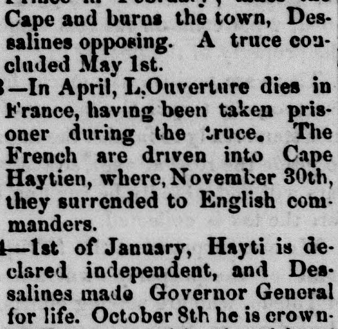

(Jacques ler.) 1805—A proclamation of Dessalines, of April 28th, orders the massacre of all French residents(Jacques I.) 1805—Una proclama de Dessalines, del 28 de abril, ordena la
Tama County Republican. Toledo, Tama County, Iowa, March 30, 1871. Page 1. View the originalVer el original

The newspaper excerpt details a chronological timeline of events in the island from 1804 to 1812, including the declaration of Hayti's independence under Dessalines, subsequent leadership changes, conflicts, and massacres. It notes that Spain recovered possession of the eastern part of the island in 1806 and the colony in 1808, followed by Dominicans declaring their independence, abolishing slavery, and driving the French out of Santo Domingo in 1809. The timeline concludes with leadership divisions between Christophe, who was crowned King Henry I, and President Petion of Haiti up to 1812.El extracto periodístico detalla una relación cronológica de los sucesos acaecidos en la isla entre 1804 y 1812, que abarca la proclamación de la independencia de Haití bajo Dessalines, las consiguientes alternancias de mando, guerras y degüellos. Refiere que España recobró la posesión de la parte oriental de la isla en 1806 y de la colonia en 1808, sucediéndose la expulsión de los franceses de Santo Domingo por los dominicanos en 1809, junto con declaraciones emancipadoras y de libertad. La cronología concluye con las escisiones de mando entre Christophe, coronado rey Enrique I, y el presidente Petion de Haití hacia 1812.
FULL TEXT:TEXTO COMPLETO:
Hayti and Santo Domingo.Haití y Santo Domingo.
Chronological Epitome.Epítome cronológico.
1795—By the treaty of Basle, the Spanish portion of Santo Domingo is ceded to France.1795—Por el tratado de Basilea, la porción española de Santo Domingo es cedida a Francia.
1798—Hedouville lands at French Cape, and sends Toussaint L'Ouverture, an emancipated slave, to France. On the 8th of May, the English leave the island, and civil war between Toussaint L'Ouverture and Rigaud.1798—Hedouville desembarca en Cabo Francés, y envía a Toussaint L'Ouverture, un esclavo emancipado, a Francia. El 8 de mayo, los ingleses abandonan la isla, y guerra civil entre Toussaint L'Ouverture y Rigaud.
1801—Toussaint L'Ouverture takes the Spanish portion of the island, and assumes the title of Governor General for life.1801—Toussaint L'Ouverture toma la porción española de la isla, y asume el título de Gobernador General vitalicio.
1802—The French squadron, under Leclerc, arrives at Port au Prince in February; takes the Cape and burns the town, Dessalines opposing. A truce concluded May 1st.1802—La escuadra francesa, bajo Leclerc, llega a Puerto Príncipe en febrero; toma el Cabo y quema el pueblo, oponiéndose Dessalines. Una tregua concluida el 1 de mayo.
1803—In April, L'Ouverture dies in France, having been taken prisoner during the truce. The French are driven into Cape Haytien, where, November 30th, they surrendered to English commanders.1803—En abril, L'Ouverture muere en Francia, habiendo sido tomado prisionero durante la tregua. Los franceses son empujados a Cabo Haitiano, donde, el 30 de noviembre, se rindieron a comandantes ingleses.
1804—1st of January, Hayti is declared independent, and Dessalines made Governor General for life. October 8th he is crowned Emperor, with the title of James I. (Jacques 1er.)1804—El 1 de enero, Haití es declarado independiente, y Dessalines es hecho Gobernador General vitalicio. El 8 de octubre es coronado Emperador, con el título de Jacobo I. (Jacques 1er.)
1805—A proclamation of Dessalines, of April 28th, orders the massacre of all French residents, and the order is at once put in force. Those spared are subsequently assembled on the Place d'Armes to receive certificates of protection, and the little remnant of survivors are then shot.1805—Una proclama de Dessalines, del 28 de abril, ordena la masacre de todos los residentes franceses, y la orden es puesta en vigor de inmediato. Los que fueron perdonados son reunidos subsecuentemente en la Place d'Armes para recibir certificados de protección, y el pequeño remanente de sobrevivientes es entonces fusilado.
1806—Dessalines is executed as a tyrant October 17th, at Pont Rouge. The east part of the island repossessed by Spain.1806—Dessalines es ejecutado como tirano el 17 de octubre, en Pont Rouge. La parte este de la isla es recuperada por España.